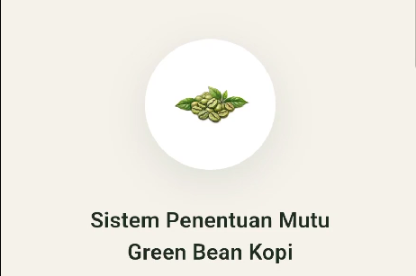
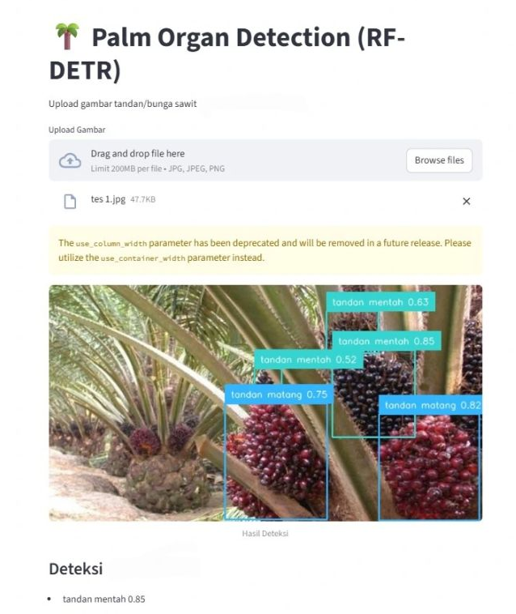
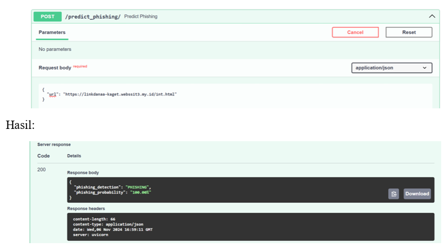

Aini
Hi, I'm Nurul Aini,
Fresh
Graduate from Information Technology with interest on
Machine Learning, Data Science, Data Analyst and Front End Web
development
Fresh graduate from Information Technology, Universitas Sumatera Utara, with experience and interest in Machine Learning (AI/ML), Data Analysis, Data Science, and Front-End Web Development. I served as a Machine Learning Engineer Intern at the Indonesian Oil Palm Research Institute (IOPRI), developing computer vision-based object detection models.
During my college years, I was actively involved in student organizations, being a staff in Research & Technology division in BEM Fasilkom-TI, a member of the events committee for welcoming a new students, and participating as a member of GDSC / Google Developer Group on Campus USU. I am able to contribute professionally through strong teamwork and good time management skills.
Machine Learning Engineer Intern
Indonesian Oil Palm Research Institute (IOPRI) • Internship- Collected, cleaned, and processed agricultural image datasets to train Machine Learning models for oil palm reproductive organ classification.
- Experimented with and benchmarked multiple object detection architectures (YOLOv5, YOLOv8, and RT-DETR), optimizing model hyperparameters to achieve high accuracy on custom datasets.
- Performed data preprocessing, data annotation, and augmentation using Roboflow tools, mitigating class imbalance and improving model regularization.
- Utilized Python, PyTorch, OpenCV, and Pandas throughout the ML workflow covering data ingestion, model training, and performance validation.
- Supported the development of an Oil Palm Chatbot Assistant ("OPA") by structuring and cleaning a document knowledge base extracted from PPKS research publications, applying rule-based chunking, and authoring YAML metadata schemas.
Staff of Research & Technology Division
BEM Fasilkom-TI USU • Organization- Helping students to improve their skills in the IT field.
- Collaborated with lecturers and faculty to organize PKM (Student Creativity Program) programs.
- Researched and shared information on scholarships and IT competitions to support student development.
Events Division Staff — PMB TI SeekIT
Himpunan Mahasiswa Teknologi Informasi USU • Organization- Collaborated with lecturers and faculty members to organize and execute student creativity programs (PKM).
- Researched and disseminated verified information regarding scholarships and national IT competitions to support student development.
- Facilitated peer-sharing sessions and workshops aimed at improving students' practical skills in the IT field.
Member of Machine Learning Path
Google Developer Student Clubs (GDSC) USU • Organization- Developed technical knowledge in Google developer technologies within a peer-to-peer learning environment.
- Completed the Machine Learning path by successfully designing and delivering a final project assignment.

Deteksi Mutu Green Bean Kopi

Deteksi Organ Sawit

Deteksi Link Phishing
Python
Core language for AI/ML development and analysis
SQL
Relational database querying and management
Machine Learning Fundamentals
Supervised and unsupervised models and algorithms
Computer Vision
Object detection using YOLO and RT-DETR architectures
Data Annotation
Dataset labeling and quality control workflow
Data Preprocessing
Cleaning, structuring, and transforming raw data
HTML/CSS
Web page structuring and responsive layout design
React
Component-based frontend interface development
Flutter
Cross-platform mobile application development
Pandas
Data analysis and data manipulation tool for Python
NumPy
Numerical computing and multi-dimensional array operations
Scikit-learn
Classical machine learning algorithms and data analysis
PyTorch
Deep learning framework for training neural networks
TensorFlow
End-to-end framework for machine learning models
Roboflow
Dataset management, annotation, and augmentation for CV
Google Colab
Cloud environment for developing and running Jupyter notebooks
Kaggle Notebooks
Interactive notebook environment for data science projects
Laravel
PHP web framework for building secure full-stack applications